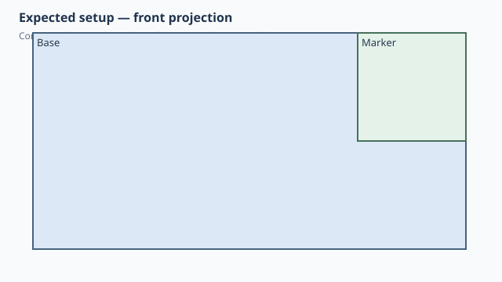

Forge model example
Topology-backed corner anchor
What this example makes
The marker sits on the front-top-right corner of the base.


Forge code
This is the complete Forge source used for this example.
class Base:
width = 40.0
height = 20.0
def build(self):
return Box(self.width, 30, self.height, anchor=Anchor.BOTTOM)
class Marker:
def build(self):
return Box(10, 10, 10, anchor=Anchor.BOTTOM)
class CornerAnchor:
base_width = 40.0
base_height = 20.0
def build(self):
base = Base(
width=self.base_width,
height=self.base_height,
)
marker = Marker().attach(
base,
parent=Anchor.FRONT_TOP_RIGHT,
child=Anchor.BACK_TOP_RIGHT,
)
return base + marker
CornerAnchor()
API used
Anchor.FRONT_TOP_RIGHT paired with child Anchor.BACK_TOP_RIGHT
Reference code
The same model is written independently with the reference libraries below. This makes it easier to compare modelling style and the resulting shape.
PythonSCAD
"""PythonSCAD geometry reference for the front/top/right corner marker."""
from pythonscad import *
base = cube([40, 30, 20], center=True).up(10)
marker = cube([10, 10, 10], center=True).translate([15, -20, 15])
model = base | marker

Reference result checks · PASS · 1/1 passed
| Check | Status | Expected | Measured | Detail |
|---|---|---|---|---|
| bounds | PASS | {'min': [-20.0, -25.0, 0.0], 'max': [20.0, 15.0, 20.0]} | {'min': [-20.0, -25.0, 0.0], 'max': [20.0, 15.0, 20.0]} | max difference 0.0 mm; allowed 0.5 mm |
pyBOSL2
"""pyBOSL2 geometry reference for a marker touching a box corner.
Forge additionally qualifies the native corner relationship after parent
parameter changes; this file is the readable geometry comparison.
"""
from pybosl2 import cuboid
base = cuboid([40, 30, 20]).up(10)
marker = cuboid([10, 10, 10]).translate([15, -20, 15])
model = base | marker

Reference result checks · PASS · 1/1 passed
| Check | Status | Expected | Measured | Detail |
|---|---|---|---|---|
| bounds | PASS | {'min': [-20.0, -25.0, 0.0], 'max': [20.0, 15.0, 20.0]} | {'min': [-20.0, -25.0, 0.0], 'max': [20.0, 15.0, 20.0]} | max difference 0.0 mm; allowed 0.5 mm |
CadQuery
"""CadQuery reference for a marker touching the front/top/right corner."""
import cadquery as cq
base = cq.Solid.makeBox(40, 30, 20, cq.Vector(-20, -15, 0))
marker = cq.Solid.makeBox(10, 10, 10, cq.Vector(-5, -5, -5))
model = cq.Assembly()
model.add(base, name="base")
model.add(marker, name="marker", loc=cq.Location((15, -20, 15)))

Reference result checks · PASS · 1/1 passed
| Check | Status | Expected | Measured | Detail |
|---|---|---|---|---|
| bounds | PASS | {'min': [-20.0, -25.0, 0.0], 'max': [20.0, 15.0, 20.0]} | {'min': [-20.0, -25.0, 0.0], 'max': [20.0, 15.0, 20.0]} | max difference 0.0 mm; allowed 0.5 mm |
build123d
"""build123d reference: marker at the base's front/top/right corner."""
from build123d import Align, Box, BuildPart, Locations
bottom = (Align.CENTER, Align.CENTER, Align.MIN)
with BuildPart() as model:
Box(40, 30, 20, align=bottom)
with Locations((15, -20, 15)):
Box(10, 10, 10)

Reference result checks · PASS · 1/1 passed
| Check | Status | Expected | Measured | Detail |
|---|---|---|---|---|
| bounds | PASS | {'min': [-20.0, -25.0, 0.0], 'max': [20.0, 15.0, 20.0]} | {'min': [-20.0, -25.0, 0.0], 'max': [20.0, 15.0, 20.0]} | max difference 0.0 mm; allowed 0.5 mm |
How Forge builds it in SolidCraft
joint.create receives SolidCraft edge/on/corner picks so the saved design can re-find the corner after geometry changes.
Show generated SolidCraft commands
[
{
"command": "joint.create",
"params": {
"type": "rigid",
"name": "Attach Marker to Base",
"a": {
"edge": [
20.0,
-15.0,
10.0
],
"on": [
0.0,
-15.0,
10.0
],
"corner": [
20.0,
-15.0,
20.0
],
"occurrence": "$base"
},
"b": {
"point": [
20.0,
-15.0,
20.0
],
"z": [
0.0,
1.0,
0.0
],
"x": [
-1.0,
0.0,
0.0
],
"occurrence": "$marker"
}
}
}
]SolidCraft result
Built and measured with SolidCraft 0.42.0. Open the measurement details to inspect body sizes and editable parameters.
size 80x40 · 2 bodies
Editable parameters
| Name | Value |
|---|---|
base_width | 80.0 |
base_height | 40.0 |
Body size
| Body | Minimum | Maximum |
|---|---|---|
| Base | [-40, -15, 0] | [40, 15, 40] |
| Marker | [30, -25, 30] | [40, -15, 40] |
Original model · 2 bodies
Editable parameters
| Name | Value |
|---|---|
base_width | 40.0 |
base_height | 20.0 |
Body size
| Body | Minimum | Maximum |
|---|---|---|
| Base | [-20, -15, 0] | [20, 15, 20] |
| Marker | [10, -25, 10] | [20, -15, 20] |
Semantic validation · PASS · 4/4 checks passed
| Status | Level | Check | Expected | Actual |
|---|---|---|---|---|
| PASS | Q4 | declared target geometry | [{"label": "Base", "min": [-20, -15, 0], "max": [20, 15, 20]}, {"label": "Marker", "min": [10, -25, 10], "max": [20, -15, 20]}] | [{"min": [-20.0, -15.0, 0.0], "max": [20.0, 15.0, 20.0]}, {"min": [10.0, -25.0, 10.0], "max": [20.0, -15.0, 20.0]}] |
| PASS | Q4 | BACK_TOP_RIGHT meets parent FRONT_TOP_RIGHT | {"min": [10, -25, 10], "max": [20, -15, 20]} | {"max": [20.0, -15.0, 20.0], "min": [10.0, -25.0, 10.0]} |
| PASS | Q5 | declared mutation target geometry | [{"label": "Base", "min": [-40, -15, 0], "max": [40, 15, 40]}, {"label": "Marker", "min": [30, -25, 30], "max": [40, -15, 40]}] | [{"min": [-40.0, -15.0, 0.0], "max": [40.0, 15.0, 40.0]}, {"min": [30.0, -25.0, 30.0], "max": [40.0, -15.0, 40.0]}] |
| PASS | Q5 | corner follows 80x40 mutation | {"min": [30, -25, 30], "max": [40, -15, 40]} | {"max": [40.0, -15.0, 40.0], "min": [30.0, -25.0, 30.0]} |
Visual result
Actual is the SolidCraft render. Goal shows the expected shape. Overlay places both on top of each other so differences are easy to see.
Iso
Current SolidCraft iso view

Expected geometry in the same iso view

Expected geometry over the actual iso view
Front

Current SolidCraft front view

Expected geometry in the same front view

Expected geometry over the actual front view
Right

Current SolidCraft right view

Expected geometry in the same right view

Expected geometry over the actual right view
Technical test details
Q1 and Q2 tests
These are the exact automated tests used for this example.
- Q1 PASS
- Q2 PASS
Geometry checks
These are the sizes and measurement points used by the automated checks.
| Body | Minimum | Maximum |
|---|---|---|
| Base | [-20, -15, 0] | [20, 15, 20] |
| Marker | [10, -25, 10] | [20, -15, 20] |
- Is the size check enough for this model? Yes — The base and marker positions show the intended corner placement. The saved SolidCraft model is then changed to confirm that the marker keeps following that corner.
- Views checked: iso, front, right
Saved-design test
Checked in the saved model. Change the base from 40x20 to 80x40 mm; the marker must follow both the new right side and new top.
Raw test files
- Forge fixture source
- PythonSCAD reference source
- pyBOSL2 reference source
- CadQuery reference source
- build123d reference source
- Generated command JSON in build output
- results.json
- measurements-size-80x40.json
- measurements.json
- joint-inspect.json
- model-size-80x40.sc
- model.sc
- model.step
- qualification-result.json
- validation.json
- visual-validation.json
- camera-front.json
- camera-iso.json
- camera-right.json
- q1-case-evidence.txt
- q2-case-evidence.txt
- Native snapshot: model.png
- Native snapshot: model-front.png
- Native snapshot: goal-front.png
- Native snapshot: overlay-front.png
- Native snapshot: visual-diff-front.png
- Native snapshot: model-right.png
- Native snapshot: goal-right.png
- Native snapshot: overlay-right.png
- Native snapshot: visual-diff-right.png
- Native snapshot: model-iso.png
- Native snapshot: goal-iso.png
- Native snapshot: overlay-iso.png
- Native snapshot: visual-diff-iso.png
- Reference evidence: reference-pythonscad/result.json
- Reference evidence: reference-pythonscad/model.stl
- Reference evidence: reference-pythonscad/model-front.png
- Reference evidence: reference-pythonscad/model-right.png
- Reference evidence: reference-pythonscad/model-iso.png
- Reference evidence: reference-pybosl2/result.json
- Reference evidence: reference-pybosl2/model.stl
- Reference evidence: reference-pybosl2/model-front.png
- Reference evidence: reference-pybosl2/model-right.png
- Reference evidence: reference-pybosl2/model-iso.png
- Reference evidence: reference-cadquery/result.json
- Reference evidence: reference-cadquery/model.stl
- Reference evidence: reference-cadquery/model-front.png
- Reference evidence: reference-cadquery/model-right.png
- Reference evidence: reference-cadquery/model-iso.png
- Reference evidence: reference-build123d/result.json
- Reference evidence: reference-build123d/model.stl
- Reference evidence: reference-build123d/model-front.png
- Reference evidence: reference-build123d/model-right.png
- Reference evidence: reference-build123d/model-iso.png


Reference documentation
- BOSL2: BOSL2 supports side/edge/corner anchors; its anchor also carries orientation, which is a useful design reference for Forge.